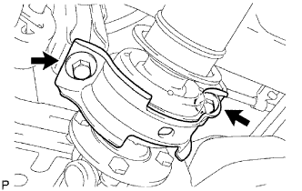
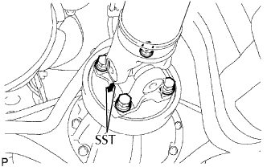

CỤM TRỤC CÁC ĐĂNG PHÍA SAU > LẮP |
| 1. LẮP TRỤC CÁC ĐĂNG VỚI VÒNG BI ĐỠ GIỮA |
 |
Tháo SST ra khỏi vỏ mở rộng hộp số.
Lắp trục cácđăng vào vỏ mở rộng hộp số.
|  |
Lắp giá bắt vòng bi đỡ giữa bằng 2 đệm và 2 bu lông. Hãy xiết chặt các bu lông bằng tay càng nhiều càng tốt.
|  |
Gióng thẳng các dấu ghi nhớ trên mặt bích trục các đăng và mặt bích của bộ vi sai.
Lắp trục các đăng bằng 4 bulông, 4 vòng đệm và 4 đai ốc.
 |
Dỡ tải cho xe. Đường tâm vòng bi giữa và đường tâm của vỏ vòng bi đỡ giữa (xem hình vẽ) phải được điều chỉnh nằm trong -1.0 đến 1.0 mm của chúng. Hãy đo sự sai khác dọc theo trục trước/sau của xe.
Xiết chặt 2 bu lông của giá bắt vòng bi đỡ giữa.